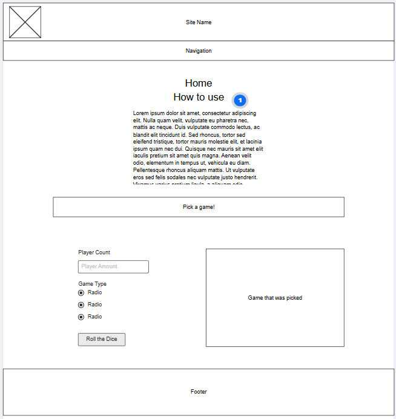
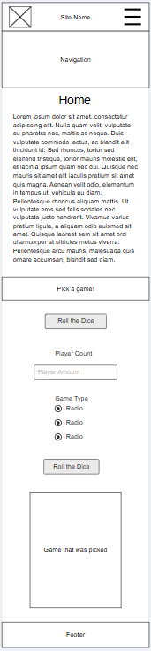

Site Name: Woodrow's Game Picker
Site Purpose
This site will allow you to enter in board or card games you own. Then you can enter in some details and let the site pick what you and your friends should play.
Scenarios
- What type of games can I enter into to be picked from
- Can I ask the information of the games I have entered?
Color Scheme
I have selected the following colors for my color scheme
- Primary Color: #02182b Prussian Blue
- Secondary Color: #70798C Slate Grey
- Accent Color: #EADEDA Dust Grey
Typography
Here are my selections of fonts and what they will be used for
- Heading will use Space Grotesk
- Body text will use Ubuntu
Wireframes
Desktop

Mobile
